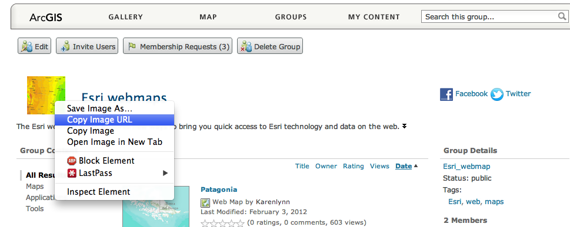
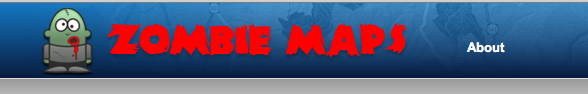
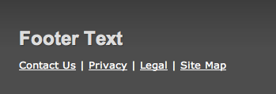
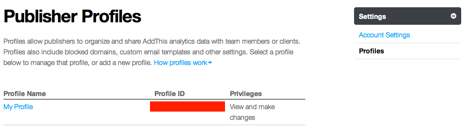

This template provides a starting point for creating your Web application. This easily configurable template allows you to define options for displaying a group. This read-me file explains how to setup and configure the template to run on your web server. We have also provided a few tips on how to personalize the template by adding a company logo and customizing the content.
Table of Contents
Install the Web application
These instructions assume that you have a Web server like Internet Information Services(IIS) installed and setup on your machine. If you are using another Web server, the general installation steps will be the same, but you will need to check your Web server's documentation for specific information on deploying and testing the application.
- Copy the contents of the zip file into your web server's root directory. In IIS, the default location for the web server's root folder is
c:\inetpub\wwwroot.
- If your application edits the features in a feature service, enables the elevation chart, contains secure services or web maps that aren't publicly shared or generates requests that exceed 2000 characters you may need to setup and use a proxy page. One example where you may exceed the URL length is by using complex polygons as an input to a task. Another example is by specifying a spatial reference using well-known text (wkt).
View the Using the proxy page help topic for details on installing and configuring a proxy page. After setting up the proxy, set the proxyUrl option in index.html to point to your proxy.
- Test the page using the following URL: http://localhost/[template name]/index.html, where [template name] is the name of the folder where you extracted the zip contents.
Top
Now let's configure the application to use a different group and modify configuration options.
-
Every group on ArcGIS.com has a unique identifier (id). To find the group's id, navigate to ArcGIS.com, and find the group you want to display. If it is one of your groups, make sure it's shared with everyone (public).
To find the group's id:
- Option 1:
- Use the sample ArcGIS Online Group ID Finder demo which searches for groups by ArcGIS Online username. You can get private group ID's by using the "Sign In" link on the demo tool to log into your account and display your private groups. ArcGIS Online Group ID Finder
- Option 2:
- Navigate to the group's page.
- Right-click on the group's image to copy it's URL location or open it's location in a new tab/window.

- View the URL and copy the id as highlighted in the URL. The section you need to copy is highlighted in the image below.
- Open the config.js file in a text editor. The config.js file is located in the config folder in the root directory of this application.
- To modify the group, replace the string for id with your group's id.
"group":"4a6f9fdc83ce44b6985115e4bd73cacd"
- By default, the application displays the ArcGIS.com group's title as the application's home heading, the group's summary as the application's home snippet and the group's description as the application's home side content. You can overwrite these by setting the following properties:
"homeHeading":"This is a custom title for your home page",
"homeSnippet":"This is a custom summary for home map",
"homeSideContent":"This is a custom description for your home page",
- By default, the application displays the ArcGIS.com map's title as the application's title and the map's summary as the application's subtitle. You can overwrite these by setting the following properties:
"mapTitle":"This is a custom title for your map",
"mapSnippet":"This is a custom subtitle",
"mapItemDescription":"This is a custom description",
- You can edit this file to set the following application properties:
- appid: ID of application on ArcGIS.com containing your settings for this template.
- theme: Color theme to use. Options are "blueTheme", "redTheme" or "greenTheme".
- siteTitle: The name of your website.
- siteBannerImage: URL for logo image. If empty, Site Title text is used in its place.
- mapTitle: If not specified, the ArcGIS.com map's title is used.
- mapSnippet: If not specified, the ArcGIS.com web map's summary is used
- mapItemDescription: Displayed in the about section of the map page. Defaults to map description.
- homeHeading: Heading displayed on the index page. Uses group title by default.
- homeSnippet: Summary displayed on the index page. Uses group summary by default.
- homeSideHeading: Heading displayed on the side-content on the index page.
- homeSideContent: Displayed on the side of the index page. Defaults to group description.
- footerHeading: Heading displayed in the footer.
- footerDescription: Content displayed in the footer.
- footerLogo: Image displayed in the footer. Defaults to group image.
- footerLogoUrl: Link used for the footer image. Defaults to link to group page on ArcGIS.com
- addThisProfileId: Account ID for AddThis.com. Defaults to generic.
- defaultLayout: Default layout to use. "grid" or "list".
- searchString: Peforms a default search on the group with the set string.
- sortField: Order to display the group items. Valid fields are: title, modified, type, owner, avgRating, numRatings, numComments and numViews.
- sortOrder: Order to sort the group: "asc" or "desc".
- mapViewer: URL to open the gallery items to. "simple", "explorer", "explorer_present", "arcgis".
- galleryItemsPerPage: Number of gallery items to show per page.
- showProfileUrl: Show link to user profile . true or false.
- showSocialButtons: Show social media buttons. true or false.
- showFooter: Show footer. true or false.
- showBasemapGallery: Show basemap gallery on map: true or false.
- showGroupSearch: Show group search on index: true or false.
- showGroupSort: Show sorting bar for group.
- showMapSearch: Show map search on map: true or false.
- showLayerToggle: Show layer toggle on legend: true or false.
- showLayoutSwitch: Show layout switch on index: true or false.
- showOverviewMap: Show overview on map: true or false.
- showMoreInfo: Show more info link in about on map: true or false.
- showPagination: Show pagination on index: true or false.
- showExplorerButton: Show explorer button on map: true or false.
- showArcGISOnlineButton: Show ArcGIS button on map: true or false.
- showLicenseInfo: Show Use Constraints on map page.
- showAttribution: Show sources on map page.
- showComments: Show comments on map page.
- showRatings: Show ratings of items in group and on map page.
- showMobileButtons: Show map buttons to open in the mobile app or download the mobile app: true or false.
- openGalleryItemsNewWindow: Open gallery items in a new window: true or false.
- bannerBackground: Background image displayed in the center of the page banner.
- proxyUrl: Proxy URL.
- sharingurl: Portal sharing URL.
- mobilePortalUrl: Mobile Portal URL.
- pointGraphic: Graphic displayed when locating addresses.
- Save the file then test your application and note that it now displays your group and if specified your custom properties.
Top
Personalize the application
In this section, you will see how to personalize the application by adding a logo, adding custom HTMl to the footer, creating an Addthis.com account and developing a custom theme.
Top
Add a logo to the application
You can personalize your site by adding a custom logo to the application's header next to the map title.
- First make sure your image is 75 pixels high. It can be any width up to 940 pixels.
- Copy your custom logo to the images subdirectory.
- Open config.js in a text editor.
- Find the property of code that has siteBannerImage and add your image's title and extension.
"siteBannerImage":"images/yourNewLogo.png",
- Run the application. The custom logo should appear to the top navigation of the application's header.

Top
Add custom HTML to the footer
You can insert HTML into many of the config values to further customize the template. However, the HTML needs to be escaped in order to be used in the config JSON.
- Create your custom HTML.
- Copy your custom HTML from a text editor.
- Escape the HTML by using either the JavaScript String Escape or JavaScript String encoding tools.
- Open config.js in a text editor.
- Paste escaped HTML into the config value.
"footerDescription":"<div class=\"footerSmall\"><a href=\"\/about-esri\/contact.html\">Contact Us<\/a> | <a rel=\"nofollow\" href=\"\/legal\/privacy.html\">Privacy<\/a> | <a rel=\"nofollow\" href=\"\/legal\/index.html\">Legal<\/a> | <a href=\"\/site\/sitemap.html\">Site Map<\/a><\/div>",
- Run the application and the custom HTML should appear.

Top
Setup an AddThis account for analytics
You can create an account for the sharing plugin to get real-time analytics, weekly email reports, alerts, and more.
- Go to AddThis.com and navigate to the register page.
- After registering, go to your account settings.
- Navigate to the profile page under account settings
- Copy your "Profile ID" from the page.

- Open config.js in a text editor.
- Paste Addthis.com account ID into the config value.
"addThisProfileId":"Account Id",
- Run the application. The application will now be using your AddThis account.
Top
Create a new custom theme
You can personalize your site by creating a unique color scheme. This requires knowledge of CSS.
- Open css/themes.css in a text editor.
- Scroll to the bottom where the custom theme classes are defined.
- Change wherever it says ".custom" and name it what you would like to give your theme.
- Fill in all the empty CSS styles with how you'd like the theme styled.
- Save the file.
- Open config.js in a text editor.
- Find the property of code that has "theme" and add the title of your theme.
- Use the CSS Generator to create CSS3 compatible styles such as rounded borders, shadows, and background gradients.
- Run the application and the custom theme should appear.
Top
Configure the template to work with your ArcGIS Portal
You can use this template with your organization's ArcGIS Portal by setting a few configuration options.
- Open config.js in a text editor.
- Locate the options for "sharingurl" and "mobilePortalUrl".
"sharingurl":"http://www.arcgis.com/",
"mobilePortalUrl":"arcgis://www.arcgis.com/",
- Change these settings to point to your portal's URL instead of using ArcGIS.com's URL.
"sharingurl":"http://www.myorg.com/",
"mobilePortalUrl":"arcgis://www.myorg.com/",
- Save the file.
- Run the application and the template should be using your portal.
Top